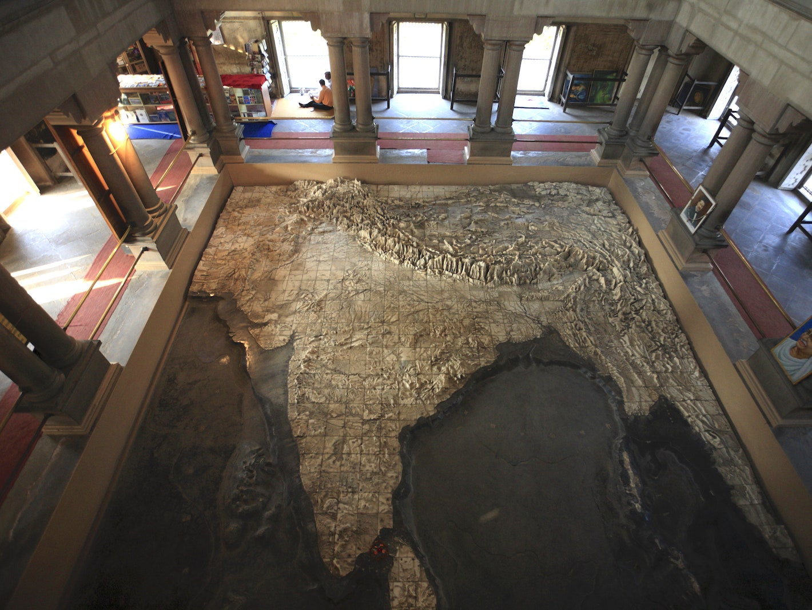

India is an ancient country(Original name: Bhārat). We are blessed with a beautiful heritage. We are solely responsible to preserve the same so that our future generations also get to see and experience the same.
Indian heritage and culture are vast and vivid because of the large number of religious groups residing in our country. Every community has its own set of customs and traditions which it passes on to its younger generation.
However, some of our customs and traditions remain the same throughout IndiaOur traditions teach us to inculcate good habits and make us a good human being. Our cultural heritage is thus a beautiful gift from our older generation that will help us become a better human being and build a harmonious society.
Indian literature is as rich as its culture. We have various books written on many topics since ancient times. We have the Vedic literature, epic Sanskrit literature, Classic Sanskrit literature and Pali literature among other kinds of Indian literature. Many of our books are being translated to other languages to provide access to a greater number of readers so that more and people can benefit from the knowledge. Such a wonderful and rich literature must be preserved at any cost.
Numerous beautiful geological structures found in different parts of India. Best of the splendid geological structures that form a part of our country include Lonar Crater Lake, Siachen Glacier, Jammu and Kashmir, Pillar Rocks, Kodaikanal, Barren Island, Andamans, Magnetic Hill, Leh, Columnar Basaltic Lava, Udupi, and Toad Rock. All these structures are true wonders of nature. A lot of tourists every year from around the world especially visit these places just to catch a glimpse of these marvelous creations of God.
The Ministry of Culture plays a vital role in the preservation and promotion of art and culture. Its aim is to develop ways and means by which basic cultural and aesthetic values and perceptions remain active and dynamic among the people. It also undertakes programmes for the promotion of various manifestations of contemporary art. The Department is a nodal agency for commemorating significant events and celebrating centenaries of great artists.
UNESCO World Natural Heritage Sites in India
The below geological places have been enlisted in UNESCO World Natural Heritage Sites. These sites include:
1. Home for the rare one-horned rhinoceros, Kaziranga National Park, in 1985.
2. Home for numerous species of beautiful birds, Keoladeo National Park, in 1985.
3. A beautiful wildlife sanctuary, Manas Wildlife Sanctuary, in 1985.
4. The biggest mangrove forest, Sundarbans, in the year 1987.
5. Nanda Devi and Valley of Flowers National Park, in 2004.
6. The Western Ghats, in 2012.
7. The Great Himalayan National Park was declared a UNESCO World Heritage Site in the year 2014.